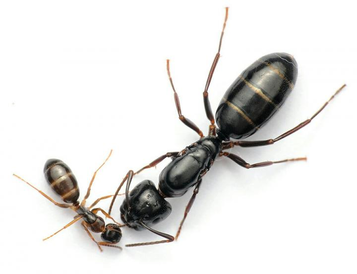

Camponotus fallax

Черные блестящие муравьи, окраска может варьировать от черной до темно-бурой, и почти красной у северных популяций.
Этот вид характерен для дубрав, где встречается на затененных участках. На севере ареала изредка отмечается на полянах в сухих сосновых борах. На юге ареала приурочен к мезофитным стациям.
Дендробионт. Сооружает гнезда в дуплах и мертвых сухих ветвях больших деревьев, так же может селиться в старых деревянных постройках.
Не избегает антропогенно трансформированных территорий. Так, например, часто встречается на территории городов, в том числе на деревьях у обочин транспортных магистралей.
Питается мелкими безпозвоночными и собирает выделения тлей. Максимальную активность проявляет ближе к вечеру и в ночное время. Охотится поодиночке в кронах деревьев. На землю спускается довольно редко - в основном только для того чтобы перейти на соседнее дерево.
В большинстве стран Европы этот муравей находится под угрозой исчезновения
Другие названия: блестящий муравей-древоточец
Особенности: полиморфизм
Кaсты: рабочие, солдаты
Размеры: рабочие: 4—7 мм, солдаты: 7—9мм, матка: 9—11 мм, самцы: 6—8 мм
Количество королев: моногиния
Размер кoлонии: 3K—5K
Тип муравейника: в разлагающейся древесине и под корой старых пней, на дереве
Типичное местообитание: Европейско-средиземноморский вид. Европа, северо-запад Африки, малая Азия, Кавказ.
Зимовка: нет сведений
Питание: всеяден, разводят тлей и червецов
Влажность: низкая ≈ 40—60%
Температура: обычная ≈ 28—29°С
Сложность содержания: легко
Подвижность: средняя
Подпишись
у нас уже 5 человек